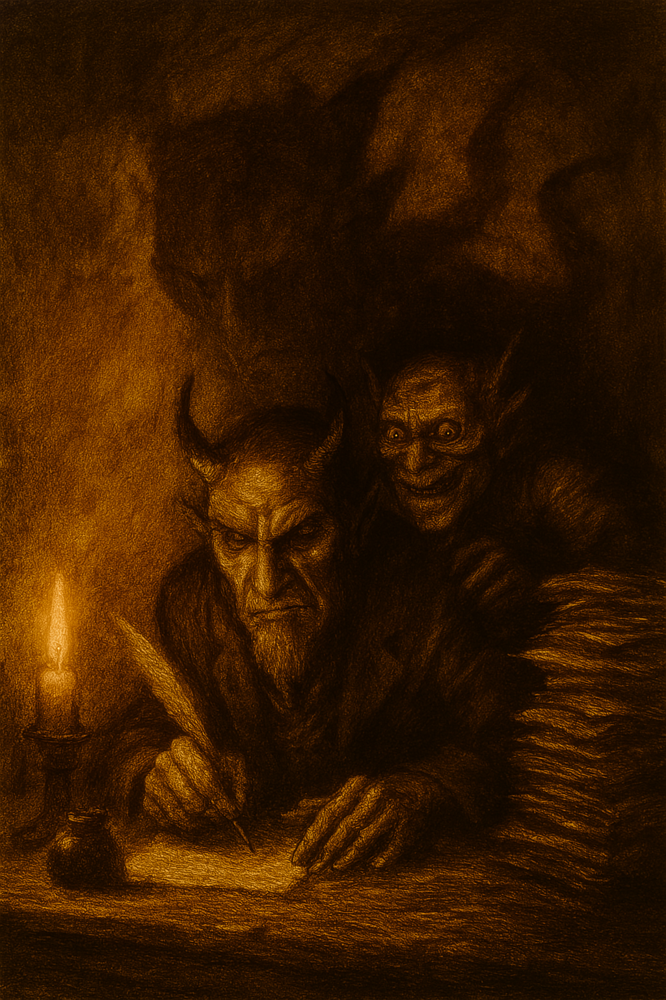

La historia presenta una serie de cartas escritas por un demonio de alto rango llamado Escrutopo a su sobrino y aprendiz, Orugario. En estas cartas, Escrutopo instruye a Orugario sobre los métodos más efectivos para tentar a un humano, conocido como "el paciente", y asegurar la condenación de su alma.
Audio del Módulo: